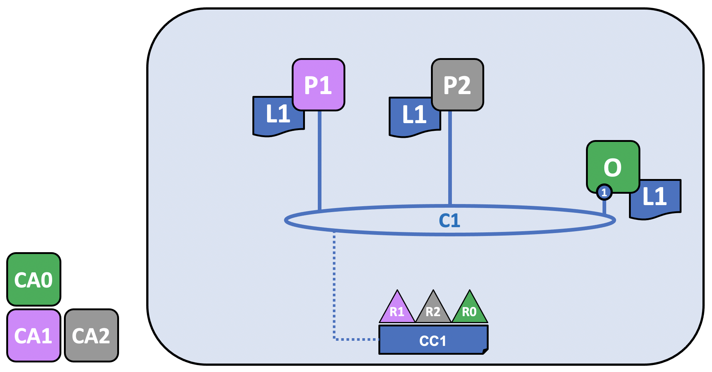

How Fabric networks are structured¶
This topic will describe, at a conceptual level, how Hyperledger Fabric allows organizations to collaborate in the formation of blockchain networks. If you’re an architect, administrator or developer, you can use this topic to get a solid understanding of the major structure and process components in a Hyperledger Fabric blockchain network. This topic will use a manageable example that introduces all of the major components in a blockchain network.
After reading this topic and understanding the concept of policies, you will have a solid understanding of the decisions that organizations need to make to establish the policies that control a deployed Hyperledger Fabric network. You’ll also understand how organizations manage network evolution using declarative policies – a key feature of Hyperledger Fabric. In a nutshell, you’ll understand the major technical components of Hyperledger Fabric and the decisions organizations need to make about them.
Note: in this topic, we’ll refer to the structure of a network that does not have a “system channel”, a channel run by the ordering service that ordering nodes are bootstrapped with. For a version of this topic that does use the system channel, check out Blockchain network.
What is a blockchain network?¶
A blockchain network is a technical infrastructure that provides ledger and smart contract (which are packaged as part of a “chaincode”) services to applications. Primarily, smart contracts are used to generate transactions which are subsequently distributed to every peer node in the network where they are immutably recorded on their copy of the ledger. The users of applications might be end users using client applications or blockchain network administrators.
In most cases, multiple organizations come together to form a channel on which transactions are invoked on chaincodes and where permissions are determined by a set of policies that are agreed to when the channel is originally configured. Moreover, policies can change over time subject to the agreement of the organizations.
In this topic, we’ll refer to both the “network” and the “channel”. In Hyperledger Fabric, these terms are effectively synonymous, as they both refer collectively to the organizations, components, policies, and processes that govern the interactions between organizations within a defined structure.
The sample network¶
Before we start, let’s show you what we’re aiming at! Here’s a diagram representing the final state of our sample network.
It might look complicated right now, but as we go through this topic, we will build up the network piece by piece, so that you see how the organizations R1, R2, R3 and R0 contribute infrastructure to the network to help form it. This infrastructure implements the blockchain network, and it is governed by policies agreed by the organizations who form the network – for example, who can add new organizations. You’ll discover how applications consume the ledger and smart contract services provided by the blockchain network.

Three organizations, R1, R2, and R0 have jointly decided that they will establish a network. This network has a configuration, CC1, which all of the organizations have agreed to and which lists the definition of the organizations as well as the policies which define the roles each organization will play on the channel.
On this channel, R1 and R2 will join peers, named P1 and P2, to the channel, C1, while R0 owns O, the ordering service of the channel. All of these nodes will contain a copy of the ledger (L1) of the channel, which is where transactions are recorded. Note that the copy of the ledger kept by the ordering service does not contain a state database. R1 and R2 will also interact with the channel through the applications A1 and A2, which they own. All three organizations have a Certificate Authority that has generated the necessary certificates for the nodes, admins, organizations definitions, and applications of its organization.
Creating the network¶
The first step in creating a network or a channel is to agree to and then define its configuration:

The channel configuration, CC1, has been agreed to by organizations R1, R2, and R0 and is contained in a block known as a “configuration block” that is, typically, created by the configtxgen tool from a configtx.yaml file. While it is possible for one organization to create this a channel unilaterally and then invite other organizations to it (we’ll explore this in Adding an organization to an existing channel), for now we’ll assume that the organizations wish to collaborate on the channel from the beginning.
Once a configuration block exists, a channel can be said to logically exist, even though no components are physically joined to it. This configuration block contains a record of the organizations that can join components and interact on the channel, as well as the policies that define the structure for how decisions are made and specific outcomes are reached. While the peers and applications are critical actors in the network, their behavior in a channel is dictated more by the channel configuration policy than any other factor. For more information about the policies and how they are defined in a channel configuration, check out Policies.
The definitions of these organizations, and the identities of their admins, must be created by a Certificate Authority (CA) associated with each organization. In our example, the organizations R1, R2, and R0 have had their certifications and organization definition created by CA1, CA2, and CA0, respectively. For information about how to create a CA, check out Planning for a CA. After the CA has been created, check out Registering and enrolling identities with a CA for information about how to define an organization and create identities for admins and nodes.
For more information about using configtxgen to create a configuration block, check out Using configtx.yaml to build a channel configuration.
Certificate Authorities¶
Certificate Authorities play a key role in the network because they dispense X.509 certificates that can be used to identify components as belonging to an organization. Certificates issued by CAs can also be used to sign transactions to indicate that an organization endorses the transaction result – a precondition of it being accepted onto the ledger. Let’s examine these two aspects of a CA in a little more detail.
Firstly, different components of the blockchain network use certificates to identify themselves to each other as being from a particular organization. That’s why there is usually more than one CA supporting a blockchain network – different organizations often use different CAs. We’re going to use three CAs in our channel; one for each organization. Indeed, CAs are so important that Hyperledger Fabric provides you with a built-in one (called the Fabric-CA) to help you get going, though in practice, organizations will choose to use their own CA.
The mapping of certificates to member organizations is achieved via a structure called a Membership Services Provider (MSP), which defines an organization by creating an MSP which is tied to a root CA certificate to identify that components and identities were created by the root CA. The channel configuration can then assign certain rights and permissions to the organization through a policy (which will give a particular organization, such as R1, the right to add new organizations to the channel). We don’t show MSPs on these diagrams, as they would clutter them up, but because they define organizations, they are very important.
Secondly, we’ll see later how certificates issued by CAs are at the heart of the transaction generation and validation process. Specifically, X.509 certificates are used in client application transaction proposals and smart contract transaction responses to digitally sign transactions. Subsequently the network nodes who host copies of the ledger verify that transaction signatures are valid before accepting transactions onto the ledger.
Join nodes to the channel¶
Peers are a fundamental element of the network because they host ledgers and chaincode (which contain smart contracts) and are therefore one of the physical points at which organizations that transact on a channel connect to the channel (the other being an application). A peer can belong to as many channels as an organizations deems appropriate (depending on factors like the processing limitations of the peer pod and data residency rules that exist in a particular country). For more information about peers, check out Peers.
The ordering service, on the other hand, gathers endorsed transactions from applications and orders them into transaction blocks, which are subsequently distributed to every peer node in the channel. At each of these committing peers, transactions are recorded and the local copy of the ledger updated appropriately. An ordering service is unique to a particular channel, with the nodes servicing that channel also known as a “consenter set”. Even if a node (or group of nodes) services multiple channels, each channel’s ordering service is considered to be a distinct instance of the ordering service. For more information about the ordering service, check out The Ordering Service.
For information about how to create peer and ordering nodes, check out Deploying a production network.
Because R1, R2, and R0 are listed in the channel configuration, they are allowed to join peers (in the case of R1 and R2) or ordering nodes (in the case of R0) to the channel.

R1’s peer, P1, and R2’s peer, P2, along with R0’s ordering service, O, join the channel through the process described in the Create a channel tutorial. Note that while only one ordering node, 1, is joined to this channel, in a production scenario, an ordering service should contain at least three nodes. For the purposes of this topic, however, it is more important to conceptualize the interactions of the ordering service and the other components of the network than it is to understand how the needs of high availability impact configuration decisions. The nodes belonging to each organization have x.509 certificates created for them by the Certificate Authority associated with that organization. P1’s certificates are created by CA1, P2’s certificates are created by CA2, and so on.
Every node in the channel stores a copy of the ledger of the channel, L1, which will be updated with each new block (note that the ordering service only contains the blockchain portion of a ledger and not the state database). Because of this, we can think of L1 as being physically hosted on P1, but logically hosted on the channel C1. The best practice is for R1 and R2 to make their peers, P1 and P2, anchor peers, as this will bootstrap communication on the network between R1 and R2.
After the ordering service has been joined to the channel, it is possible to propose and commit updates to the channel configuration, but little else. Next, you must install, approve, and commit a chaincode on a channel.
Install, approve, and commit a chaincode¶
Chaincodes are installed on peers, and then defined and committed on a channel:

In Fabric, the business logic that defines how peer organizations interact with the ledger (for example, a transaction that changes the ownership of an asset), is contained in a smart contract. The structure that contains the smart contract, called chaincode, is installed on the relevant peers, approved by the relevant peer organizations, and committed on the channel. In this way, you can consider a chaincode to be physically hosted on a peer but logically hosted on a channel. In our example, the chaincode, S5, is installed on every peer, even though organizations are not required to install every chaincode. Note that the ordering service does not have the chaincode installed on it, as ordering nodes do not typically propose transactions. The process of installing, approving, and committing a chaincode is known as the “lifecycle” of the chaincode. For more information, check out Fabric chaincode lifecycle.
The most important piece of information supplied within the chaincode definition is the endorsement policy. It describes which organizations must endorse transactions before they will be accepted by other organizations onto their copy of the ledger. An endorsement policy can be set to any combination of members in a channel, depending on the use case. If an endorsement policy is not set, it is inherited from the default endorsement policy specified in the channel configuration.
Note that while some chaincodes include the ability to create private data transactions between members on a channel, private data is outside the scope of this topic.
While it’s now technically possible to drive transactions using the peer CLI, the best practice is to create an application and use it to invoke transactions on your chaincode.
Using an application on the channel¶
After a smart contract has been committed, client applications can be used to invoke transactions on a chaincode. This completes the structure we showed in the first image:
Just like peers and orderers, a client application has an identity that associates it with an organization. In our example, client application A1 is associated with organization R1 and is connected to C1.
Once a chaincode has been installed on a peer node and defined on a channel it can be invoked by a client application. Client applications do this by sending transaction proposals to peers owned by the organizations specified by the endorsement policy. The transaction proposal serves as input to the chaincode, which uses it to generate an endorsed transaction response, which is returned by the peer node to the client application.
We can see that our peer organizations, R1 and R2, are fully participating in the channel. Their applications can access the ledger L1 via smart contract S5 to generate transactions that will be endorsed by the organizations specified in the endorsement policy and written to the ledger.
For more information about how to develop an application, check out Developing applications.
Joining components to multiple channels¶
Now that we have showed the process for how a channel is created, as well as the nature of the high level interactions between organizations, nodes, policies, chaincodes, and applications, let’s expand our view by adding a new organization and a new channel to our scenario. To show how Fabric components can be joined to multiple channels, we’ll join R2 and its peer, P2, to the new channel, while R1 and P1 will not be joined.
Creating the new channel configuration¶
As we’ve seen, the first step in creating a channel is to create its configuration. This channel will include not just R2 and R0, but a new organization, R3, which has had its identities and certificates created for it by CA3. R1 will have no rights over this channel and will not be able to join components to it. In fact, it has no way to know it even exists!

As before, now that the channel configuration, CC2, has been created, the channel can be said to logically exist, even though no components are joined to it.
So let’s join some components to it!
Join components to the new channel¶
Just as we did with C1, let’s join our components to C2. Because we already showed how all channels have a ledger and how chaincodes are installed on peers and committed to a channel (in this case, the chaincode is called S6), we’ll skip those steps for now to show the end state of C2. Note that this channel has its own ledger, L2, which is completely separate from the ledger of C1. That’s because even though R2 (and its peer, P2) are joined to both channels, the two channels are entirely separate administrative domains.

Note that while both C1 and C2 both have the same orderer organization joined to it, R0, different ordering nodes are servicing each channel. This is not a mandatory configuration because even if the same ordering nodes are joined to multiple channels, each channel has a separate instance of the ordering service, and is more common in channels in which multiple orderer organizations come together to contribute nodes to an ordering service. Note that only the ordering node joined to a particular channel has the ledger of that channel.
While it would also be possible for R2 to deploy a new peer to join to channel C2, in this case they have chosen to deploy the P2 to C2. Note that P2 has both the ledger of C1 (called L1) and the ledger of C2 (called L2) on its file system. Similarly, R2 has chosen to modify its application, A2, to be able to be used with C2, while R3’s application, A3, is being used with C2.
Logically, this is all very similar to the creation of C1. Two peer organizations come together with an ordering organization to create a channel and join components and a chaincode to it.
Think about this configuration from the standpoint of R2, which is joined to both channels. From their perspective, they might think about both C1 and C2, as well as the components they have joined to both, as the “network”, even though both channels are distinct from each other. In this sense, a “network” can also be seen as existing within the perspective of a particular organization as “all of the channels I am a member of and all of the components I own”.
Now that we have shown how organizations and their components can be joined to multiple channels, let’s talk about how an organization and its components are added to an existing channel.
Adding an organization to an existing channel¶
As channels mature, it is natural that its configuration will also mature, reflecting changes in the world that must be reflected in the channel. One of the more common ways a channel will be modified is to add new organizations to it. While it also possible to add more orderer organizations (who may or may not contribute their own nodes), in this example we’ll describe the process of how a peer organization, R3, is added to the channel configuration CC1 of channel C1.
Note that rights and permissions are defined at a channel level. Just because an organization is an administrator of one channel does not mean it will be an administrator of a different channel. Each channel is a distinct administrative zone and fully customizable to the use case it’s serving.

Although the update to the diagram looks like one simple step, adding a new organization to a channel is, at a high level, a three step process:
- Decide on the new organization’s permissions and role. The full scope of these rights must be agreed to before R3 is added to C1 and is beyond the scope of this topic, but comprise the same kinds of questions that must be answered when creating a channel in the first place. What kind of permissions and rights will R3 have on C1? Will it be an admin on the channel? Will its access to any channel resources be restricted (for example, R3 might only be able to write to C1, which means it can propose changes but not sign them)? What chaincodes will R3 install on its peers?
- Update the channel, including the relevant chaincodes, to reflect these decisions.
- The organization joins its peer nodes (and potentially ordering nodes) to the channel and begins participating.
In this topic, we’ll assume that R3 will join C1 with the same rights and status enjoyed by R1 and R2. Similarly, R3 will also be joined as an endorser of the S5 chaincode, which means that R1 or R2 must redefine S5 (specifically, the endorsement policy section of the chaincode definition) and approve it on the channel.
Updating the channel configuration creates a new configuration block, CC1.1, which will serve as the channel configuration until it is updated again. Note that even though the configuration has changed, the channel still exists and P1 and P2 are still joined to it. There is no need to re-add organizations or peers to the channel.
For more information about the process of adding an organization to a channel, check out Adding an org to a channel.
For more information about policies (which define the roles organizations have on a channel), check out Policies.
For more information about upgrading a chaincode, check out Upgrade a chaincode.
Adding existing components to the newly joined channel¶
Now that R3 is able to fully participate in channel C2, it can add its components to the channel. Rather than do this one component at a time, let’s show how its peer, its local copy of a ledger, a smart contract and a client application can be joined all at once!

In this example, R3 adds P3, which was previously joined to C2, to C1. When it does this, P3 pulls C1’s ledger, L1. As we mentioned in the previous section, R3 has been added to C1 with equivalent rights as R1 and R2. Similarly, because the chaincode S5 was redefined and reapproved on the channel to include R3, R3 can now install S5 and begin transacting. Just as R2 modified its application A2 to be able to be used with channel C2, A3 is also now able to invoke transactions on C1.
Network recap¶
We’ve covered a lot of ground in this topic. We’ve gone from a simple configuration with two organizations transacting on a single channel to multiple organizations transacting on multiple channels as well as the process for joining an organization to a channel that already exists.
While this topic represents a relatively simple case, there are endless combinations of sophisticated topologies which are possible to achieve in Fabric, supporting an endless number of operational goals, and no theoretical limit to how big a network can get. The careful use of network and channel policies allow even large networks to be well-governed.